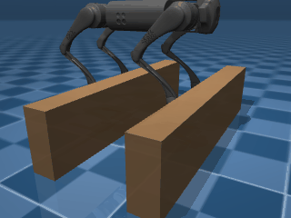
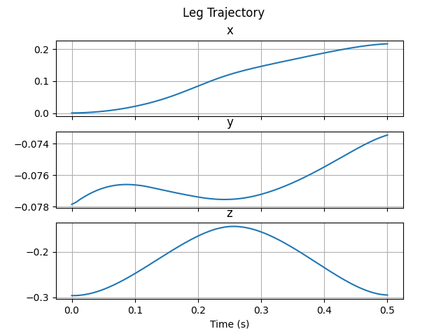
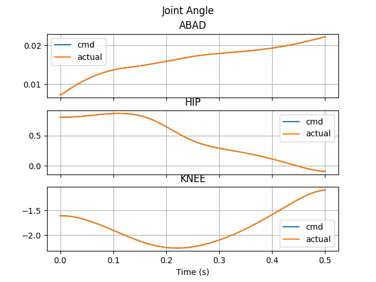
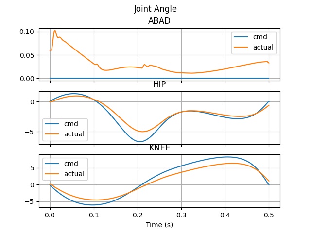

四足机器运动控制系列———插值与规划
插值与规划
在足式机器人控制当中，一个很重要的问题是对足端轨迹进行规划。一个合理的足端轨迹应该保持位置和速度在时间上的连续，在实际应用过程中，当规划好一段足端轨迹后，则需要根据规划好的该曲线进行插值，从而得到一系列的足底坐标点，作为控制器的输入参数进行控制求解。
常用的插值方法包括有三次样条曲线插值以及贝塞尔曲线插值。
三次样条曲线插值
已知条件：
- 起始点$x_0$处函数值$y_0$
- 终止点$x_f$处函数值$y_f$
- 起始点处一阶导数为$v_0$
- 终止点处一阶导数为$v_f$
引入参数$t$，且$t \in (0,1)$
易得变量$x$的插值方程如下：
设函数值$y$的插值方程为：
设该三次样条插值函数为：
其中 $a_i, i= 0, 1, 2, 3$为待定系数。
易得其导数方程为：
将条件1带入$(1)$可得：
将条件2带入函数$(1)$可得：
将条件3带入$(2)$可得：
将条件4带入$(2)$可得：
求解上述方程，可以得到：
贝塞尔曲线插值
三次贝塞尔插值需要四个控制点，一般把起始点作为第一和第二个控制点，而把终止点作为第三和第四个控制点。
若已知条件为：
- 起始点$x_0$处函数值$y_0$
- 终止点$x_f$处函数值$y_f$
- 起始点处一阶导数为0
- 终止点处一阶导数为0
引入参数$t$，且$t \in (0,1)$
则可以得到插值方程如下：
程序验证
参考quadruped_control仓库
上述程序中使用了mujoco仿真器，对宇树Go1进行了单腿轨迹规划的仿真。
仿真结果如下所示：
动态图：

足底轨迹：

关节位置：

关节速度：

本博客所有文章除特别声明外，均采用 CC BY-NC-SA 4.0 许可协议。转载请注明来源 Great New Dog's Blog！